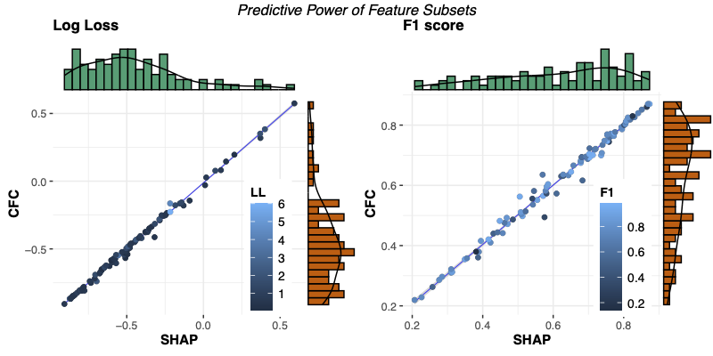

Feature Attribution for tree ensembles
The treeinterpreter package allows decomposing each prediction (from a tree based model) into bias and feature contribution components as described in http://blog.datadive.net/interpreting-random-forests/.
For a dataset with \(p\) features, each prediction on the dataset is decomposed as prediction = bias + feature_1_contribution + ... + feature_p_contribution. From hereon we refer to these “contributions” as Conditional Feature Contributions (CFCs).
CFCs provide local, case-specific explanations for predictions by tracing the decision path and assigning changes in the model’s expected output to individual features along that path. However, CFCs are prone to bias, which increases with distance from the root of the decision tree. An increasingly popular alternative, SHapley Additive exPlanation (SHAP) values, seem to reduce this bias but come with a significantly higher computational cost.
(Loecher, Lai, and Qi 2022) present an empirical comparison of the explanations produced by both methods, using a dataset of 164 publicly available classification problems. For random forests and boosted trees, they observe remarkably high correlations and similarities between local and global SHAP values and CFC scores, resulting in comparable rankings and interpretations. These findings also extend to global feature importance scores, reinforcing their use as proxies for the predictive power of individual features.
“We generated several thousand feature subsets for each dataset, re-trained models for each subset, and then measured the correlation between the model loss and the total importance of the included features”. In particular, the feature subsets were independently sampled as follows: sample the subset’s cardinality k ∈ 0, 1,.., d uniformly at random, then select k elements from 1,.., d uniformly at random. We computed both SHAP/CFC and the retrained models’ loss (either negative log loss or rmse, respectively) on a test set. This strategy yields one correlation coefficient for SHAP and CFC for each of the data sets described in Sect. 2.1.”
The following figure depicts these correlations for random forests and boosted trees as a scatterplot with marginal distributions
